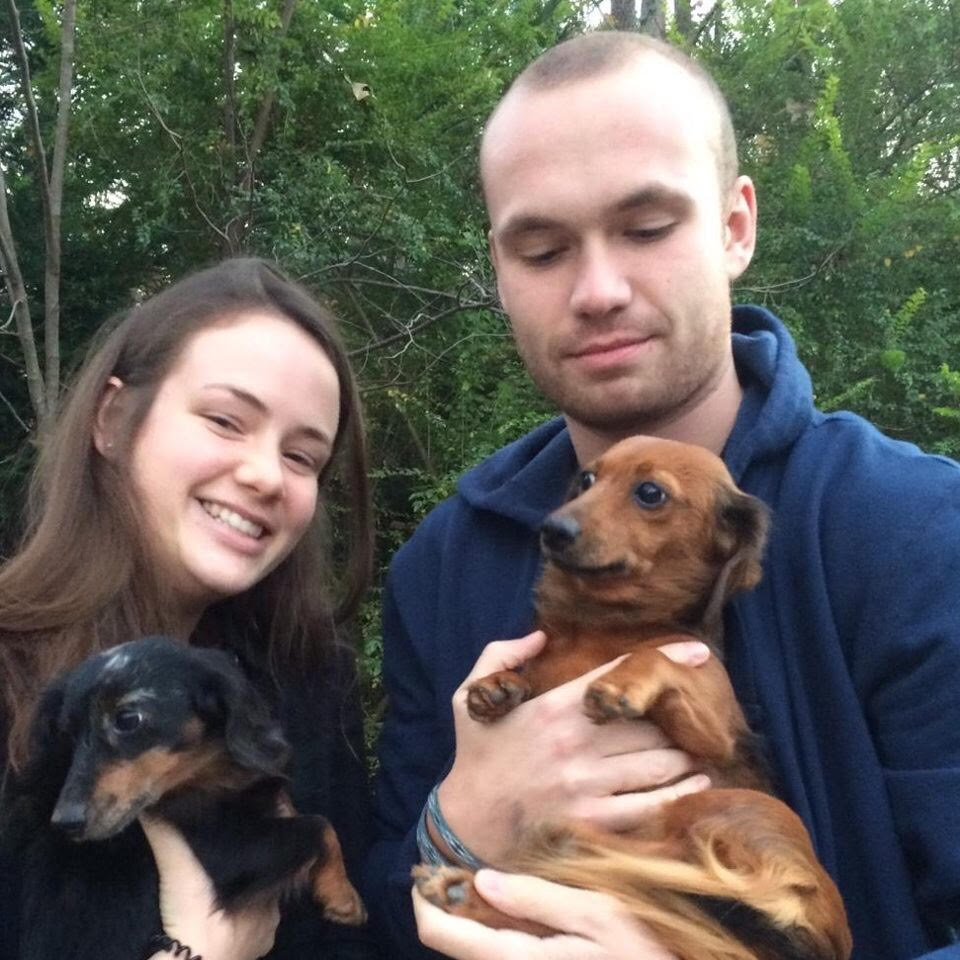

About Me

Hello World! My name is Cody Bonsma. I'm currently enrolled in GA Tech's Full-Stack coding boot camp to learn and grow. My interest in programming started a few years back when I wobbled through my senior year of college. I played around with some codecademy courses and found myself putting in a decent amount of hours over the summer. - Fast forward two years later through some entry level jobs and into a worldwide pandemic, and voila! I saw the opportunity to follow my interest and made the jump. I am very excited to take on this challenge and grow alongside my classmates in the cohort!